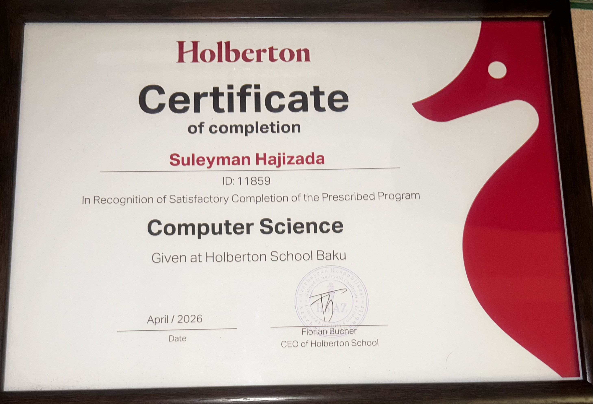

Certificate of Completion - Computer Science
🏛️ Holberton School Baku
Holberton School tərəfindən Kompüter Elmləri proqramını (Alqoritmlər, Verilənlər Strukturları, Aşağı səviyyəli C proqramlaşdırma, Sistem arxitekturası) uğurla bitirmə sertifikatı.